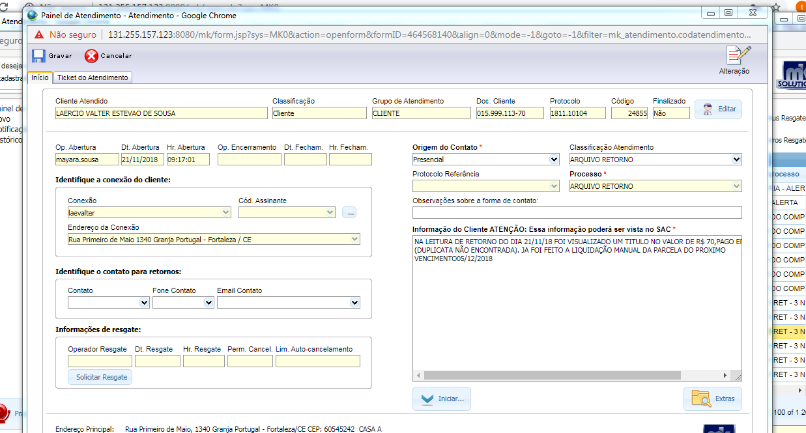

Voltar
Voltar
Duplicidade, liquidação a menor, Pgt de Titulo excluído
- Após o financeiro Niv 2 localizar o pagamento, será aberto um ticket e encaminhado para atendimento financeiro Niv 1. ligar para cliente e informar que será feita a liquidação manual da parcela correta. pedir para o mesmo colocar a informação por escrito na parcela para que não aconteça novamente esse problema.

Encerrar o ticket:
- Na aba painel de atendimento/ Seleciona a aba Ticket de atendimento, clica em encerrar, coloca o comentário do atendimento em comentários públicos e Confirmar o encerramento.
 liquidação a menor
liquidação a menor
- Após o financeiro localizar o pagamento, será aberto um ticket e encaminhado para atendimento financeiro Niv 1, ligar pro cliente e informar que será liquidada manualmente o R$ pago, mais o mesmo terá que pagar a diferença do valor pelo motoqueiro + taxa de R$ 5,00 e devolver o carne antigo para ser dado baixa manual nas parcelas.
Encaminhar o Ticket para O.S
- No painel de atendimento clicar na aba editar/Ticket de atendimento / Encaminhar / Enviar para O.S sim/ Tipo de O.S Recolher pagamento e Gravar
- Preencher as seguintes informações: em defeito reclamado/Relatar sobre o erro de liquidação a menor e o valor da diferença que deverá ser paga pelo cliente, taxa de Entrega R$ 5,00,prazo de 24hs,cliente ciente que deve entregar o antigo carne ao motoqueiro, tipo de O.S / Recolher pagamento, Data Ent/ atual , Hora Ent / atual e Gravar
Fazer o agendamento
- Em funcionário Associado ao evento/ nome do Técnico, em Titulo/ apagar o nome do cliente e colocar a descrição/ Recolher Pagamento/ Desmarcar os campos bloquear e Editável, Inicio / data e hora atual, Cor fundo e borda/ Amarelo, cor de texto/ preto e gravar
Encerrar o ticket
- Na aba painel de atendimento/ Seleciona a aba Ticket de atendimento, clica em encerrar, coloca o comentário do atendimento em comentários públicos e Confirmar o encerramento.

Pagamento de Titulo não Localizado
- Após o financeiro Niv 2 localizar o pagamento, será aberto um ticket e encaminhado para atendimento financeiro Niv 1. ligar para cliente e informar que será feita a liquidação manual da parcela correta. Verificar com o cliente seu carnê.
Encerrar o ticket
- Na aba painel de atendimento/ Seleciona a aba Ticket de atendimento, clica em encerrar, coloca o comentário do atendimento em comentários públicos e Confirmar o encerramento.

Finalizar o atendimento
Para os Demais erros de pagamento
- Solicitar as informações do pagamento, para que seja localizado pelo financeiro Niv2 e comprovante de pagamento por e-mail ou watsap
- Geralmente os erros de liquidação já estão sendo tratados pelo Financeiro Niv 2 no mesmo dia.
Abertura do ticket:
Após essas verificações, selecionar a aba novo e preencher os campos no painel de atendimento:
Origem do contato= telefônico
Processo = PGTO não confirmado
Informação do cliente = Relatar no erro do pagamento, data do pagamento, R$ do pagamento, e comprovante de pagamento, Gravar e Iniciar.
Anexar o comprovante no ticket
Clicar na aba Anexos, Folha em branco para inserir, download, escolher o arquivo e grava.
Fazer o encaminhamento do Ticket para o sub processo PGTO não localizado
- Finalizar o atendimento Informa ao cliente que será encaminhado o comprovante para analise e o setor retornara a ligação.
Após ser localizado o erro do pagamento, o ticket será devolvido para o setor Niv1 com a resposta.
De acordo com cada erro será passado as orientações ao cliente para finalização desse processo.
Diariamente o Financ Niv 2 ,encaminhara tickets de erros de pagamentos, que serão liquidados e precisa notificar o cliente através do contato por telefone.